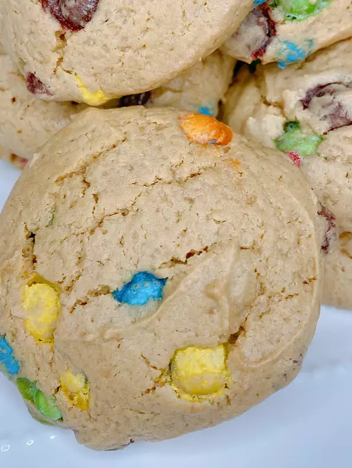

An interesting cookie recipe for when you have nothing to cook
Unlike most cookie recipes, this one doesn't use peanut butter directly,
which make somewhat different.
As such if you want to try new ways of preparing
cookies, you might as well begin by trying this.
Ingredients
- 1/2 cup of powdered peanut butter (such as PB2 idk, I took it directly from all recipes)
- 1/4 cup of sugar
- 2 1/2 tablespoons of unsalted softened butter
- 2 tablespoons of all-purpose flour
- 1 large egg
- 1 pinch of salt
- 1/2 teaspoon of peanut butter flavor
- 1/4 teaspoon of baking powder
- 1/4 cup of mini candy-coated milk chocolates (such as
Skittles M&M's)
Recipe directions
- Preheat the oven to 350 degrees F (175 degrees C). Line a baking sheet with parchment paper.
- Combine powdered peanut butter, sugar, butter, flour, egg, salt, peanut butter flavor, and baking powder in a bowl. Fold in mini M&Ms®.
- Drop dough by spoonfuls onto the prepared baking sheet.
- Bake in the preheated oven until cookies are lightly browned, about 12 minutes.